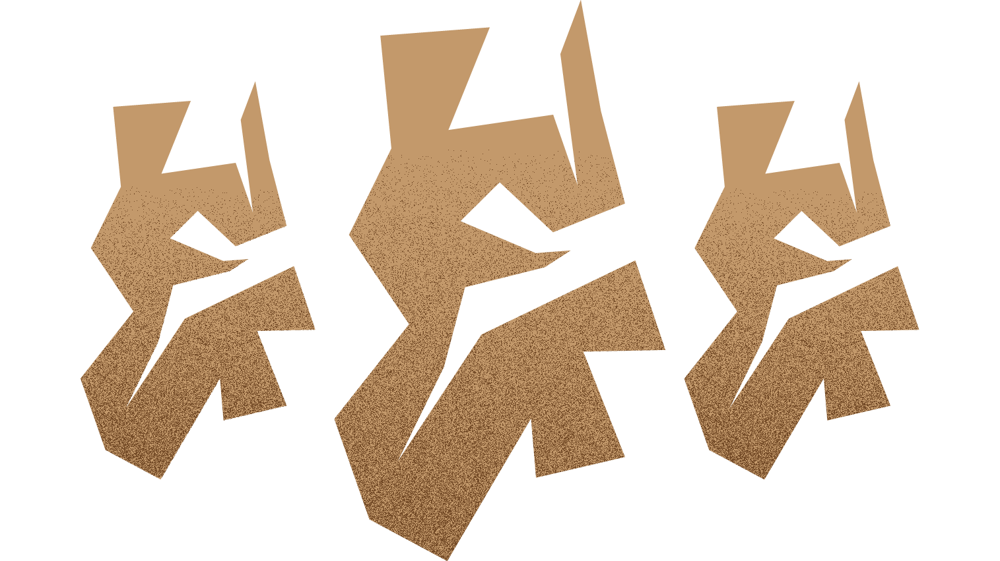

Mystery Night Two
The Sequel
By Jai Matthews& Aidan de Sousa

About Mystery Night Two
| Authors: | Jai Matthews Aidan de Sousa |
| Date Created: | March 2020 |
| Estimated Runtime: | 60-80 mins |
| Difficulty: | Medium |
“If the curator finds out this happened I’ll be arrested immediately. You've only got until 8:45 before the curator arrives for work.”
With a wealth of characters and split into 7 parts, Mystery Night two was the epic sequel to the original.
-Danny, Mystery Night Two
“All I remember was that there was a diamond to the left of a spade and that there was an ace to the left of a heart.”
-Lady Shaw, Mystery Night Two
“But just as you’re ready to give up, you notice a piece of paper sitting on the table.”
-Mystery Night Two